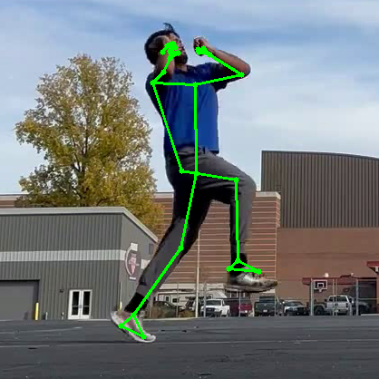
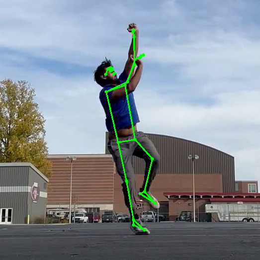
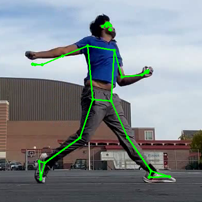
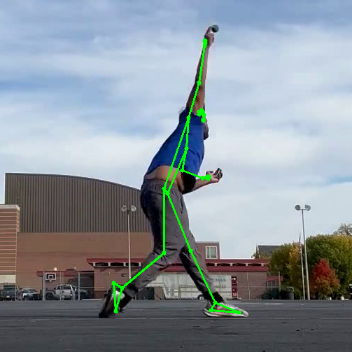
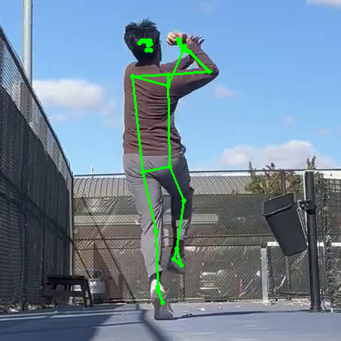
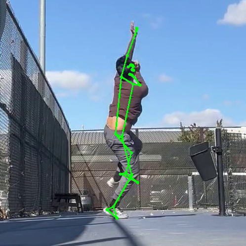
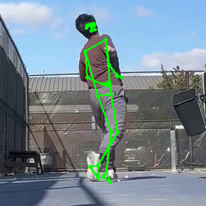
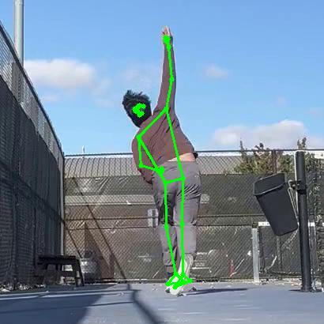

Bowling Analysis Report
January 06, 2026 at 02:58 PM
Aryan BanerjeeRight-handed
Tall right-arm quick who attacks the stumps and works in-swing with a firm front leg brace.
📍 Practice at the Black Field
Tall right-arm quick who attacks the stumps and works in-swing with a firm front leg brace.
2026-01-06
Summary

Jump
BFC
FFC
Release
Jump
BFC
FFC
ReleaseClassifications
2 identifiedHip vs Knee Dominance
Classifies bowler as hip dominant or knee dominant based on back knee flexion at BFC
Bowler Alignment
Classifies bowler as side-on, front-on, or mixed based on foot orientation
Metrics
5 analyzedFront Leg Brace
Measures front knee extension from FFC to release
Back Foot Stiffness
Measures back foot heel elevation from BFC to FFC
Lateral Flexion
Measures spine lateral flexion at release - how much the bowler leans sideways
Bowling Arm Delay
Measures bowling arm position relative to horizontal at FFC - below is better
Non-Bowling Arm Extension
Measures maximum extension of non-bowling arm between BFC and FFC